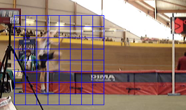
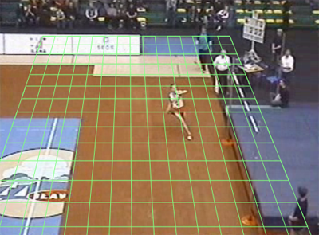
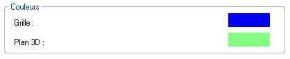

Utiliser la Grille et le Plan 3D
Ce guide vous indique comment manipuler La grille en deux dimensions, Le plan en trois dimensions, et comment Changer les couleurs de la Grille ou du Plan.
1. La grille en deux dimensions.
Utilisez le menu Image > Grille.
Un quadrillage apparaît en surimpression sur l'image.

Déplacez la Grille en faisant glisser la souris sur l'image. (Maintenez le bouton gauche enfoncé et déplacez vous)
Agrandissez ou réduisez la taille de la grille en faisant glisser la souris tout en maintenant la touche CTRL enfoncée.
Augmentez ou diminuez le nombre de divisions en faisant glisser la souris tout en maintenant la touche ALT enfoncée.
2. Le plan en trois dimensions.
Utilisez
le menu Image > Plan 3D, pour faire apparaître une grille similaire
à la précédente mais que vous pourrez manipuler dans l'espace.

Déplacez le Plan en faisant glisser la souris sur l'image. (Maintenez le bouton gauche enfoncé et déplacez vous)
Le Plan peut être déplacé de gauche à droite et de haut en bas, mais pas d'avant en arrière.
Effectuez une rotation libre du Plan en faisant glisser la souris tout en maintenant la touche CTRL enfoncée.
Augmentez ou diminuez le nombre de divisions en faisant glisser la souris tout en maintenant la touche ALT enfoncée.
3. Changer les couleurs de la Grille ou du Plan
Vous pouvez modifier les couleurs de le Grille et du Plan dans la boîte de dialogue des préférences générales.
Menu : Options > Préférences...
Puis sélectionnez l'onglet Lecture/Analyse.

Cliquez sur les rectangles colorés pour choisir de nouvelles couleurs.